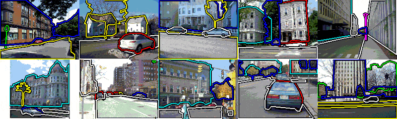
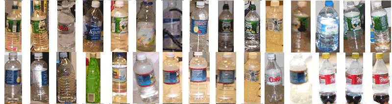
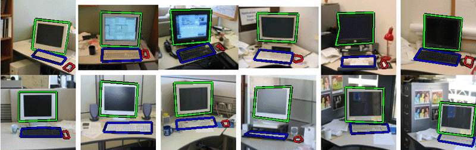
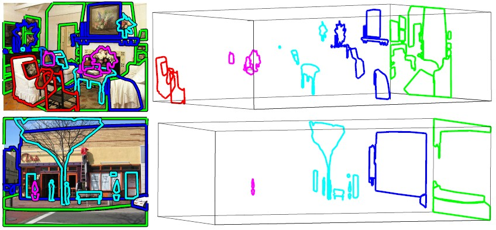
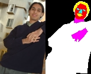
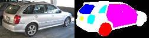
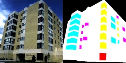
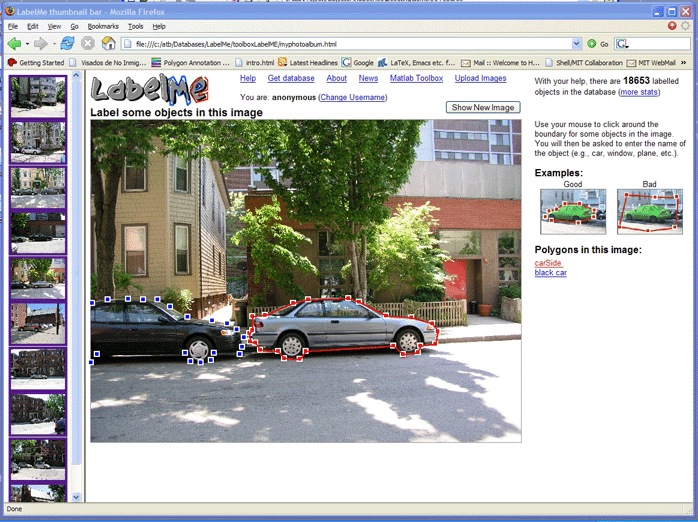

4. Using the toolbox
4.1 - Basic functions: indexing, queries
First, you need to download the LabelMe
database or you need to provide the url of the images and annotations
online. If you are going to use the dataset frequently, it is better that
you get a local copy.
% Define the root folder for the images
HOMEIMAGES = 'C:\yourpath\Images'; % you can set here your default folder
HOMEANNOTATIONS = 'C:\yourpath\Annotations'; % you can set here your default
folder
% This line reads the entire database into a Matlab struct
Dlabelme = LMdatabase(HOMEANNOTATIONS);
% Street scenes
% To get images that have trees, buildings and roads:
[D,j1] = LMquery(Dlabelme, 'object.name', 'building');
[D,j2] = LMquery(Dlabelme, 'object.name', 'road');
[D,j3] = LMquery(Dlabelme, 'object.name', 'tree');
j = intersect(intersect(j1,j2),j3);
LMdbshowscenes(LMquery(Dlabelme(j), 'object.name', 'car,building,road,tree'),
HOMEIMAGES);

% You can query the database looking for specific objects and visualize each instance in isolation:
LMdbshowobjects(LMquery(database, 'object.name', 'bottle'), HOMEIMAGES);

Creating training and test databases: the next lines show how you can create a database in which you can control the difficulty for detecting a specific object (or a set of objects). For instance, the next lines create a specialized database of images that contain only one computer screen, viewed from the front, keyboards and mouses. Furthermore, we want to normalize in size each image such that each screen has a size of 64x64 pixels, and each image has a maximal size of 128x128 pixels.
% First, define the root folder for the new database
NEWHOMEIMAGES = 'C:\yourpath\newdatabase\office\Images'; % you can set here your default folder
NEWHOMEANNOTATIONS = 'C:\yourpath\newdatabase\office\Annotations'; % you can set here your default folder
% Then, locate street scenes with frontal views of screens.
[D,j] = LMquery(Dlabelme, 'object.name', 'screen+frontal');
% and now select the images with only one screen.
counts = LMcountobject(Dlabelme(j), 'screen');
j = j(find(counts==1));
D = LMquery(Dlabelme(j), 'object.name', 'screen,keyboard,mouse-pad');
% Finally, cook database to fit our requirements
LMcookdatabase(D, HOMEIMAGES, HOMEANNOTATIONS, NEWHOMEIMAGES, NEWHOMEANNOTATIONS, ...
'objectname', 'screen', 'objectsize', [64 64], 'objectlocation', 'original','maximagesize', [128 128])
% Load new database
newdatabase = LMdatabase(NEWHOMEANNOTATIONS);
% Show images:
LMdbshowscenes(newdatabase, NEWHOMEIMAGES);

4.2 - Searching objects by viewpoint
Some objects have information related to viewpoint in the annotation
file. In the current setup, viewpoints are discretized in 12 different
orientations. For instance, for cars we have:


In order to get all the frontal cars you can use the query:
D = LMquery(Dlabelme, 'object.name', 'car+az270deg'');
We have a tool that allows labeling viewpoints for new objects. If you
want to add viewpoint information for new objects send us an email and
we will send you a link to the tool. By using the online tool, the data
that you will provide can be used in the future by other researchers.
4.3 - Depth ordering
Frequently, an image will contain many partially overlapping polygons.
This situation arises when users complete an occluded boundary or when
labeling large regions containing small occluding objects. In these situations
we need to know which polygon is on top in order to assign the image pixels
to the correct object label.
The function LMsortlayers will sort the polygons accorting to
their relative depth ordering. The function uses some heuristics (see
paper) and it will not be correct all the time.

4.4 - Object part hierarchies
Despite that object parts are not explicitly labeled as such by the annotation
tool, it is posible to authomatically discover object-part hierarchies.
When two polygons have a high degree of overlap across many images, this
provides evidence for an object-part hierarchy. The toolbox provides a
set of functions to suggest parts for an object category. The function
partsof will add a new field to each object.

The online query tool shows object parts whenever they are labeled. Here
there are some examples:
 
 
In order to add parts to the object 'car', run the next line:
D = partsof(Dlabelme, 'car', 'wheel,door,window,tire,mirror,license+plate,windshield,headlight,light');
5 - Communication with the
online tool
You can look in the demo.m file, at the end there is a description that
explains how can you talk, using Matlab, with the online annotation tool
to label only the images that you want and how to get back just those
labels and update you annotation file. The effect is like if the annotation
tool was just working for you, but still all the annotations that you
will enter will be shared and stored online.
The first function you have to look at is:
LMphotoalbum(folderlist, filelist, webpagename, HOMEIMAGES);
This function will create a web page with thumbnails with the images that
you want (look at demo.m to see how to use this with LMquery).
If you click in any thumbnail it will open LabelMe online showing that
image and allowing you to add polygons to it.
Once you are done labeling images, you can update the annotations using:
LMupdate(folderlist, filelist, HOMEIMAGES, HOMEANNOTATIONS);
This function reads the annotations from the web and replaces your local
files with the new ones. So, you can get inmediately all the labels you
enter.
The result is that the system will behave as if you had a local copy of
the annotation tool. And still, everything that you will label, will be
shared.
The next command creates a web page that adds thumbnails to the LabelMe
annotation tool:
LMthumbnailsbar(folderlist, filelist, 'myphotoalbum.html', HOMEIMAGES);
The web page created will look like this:

|